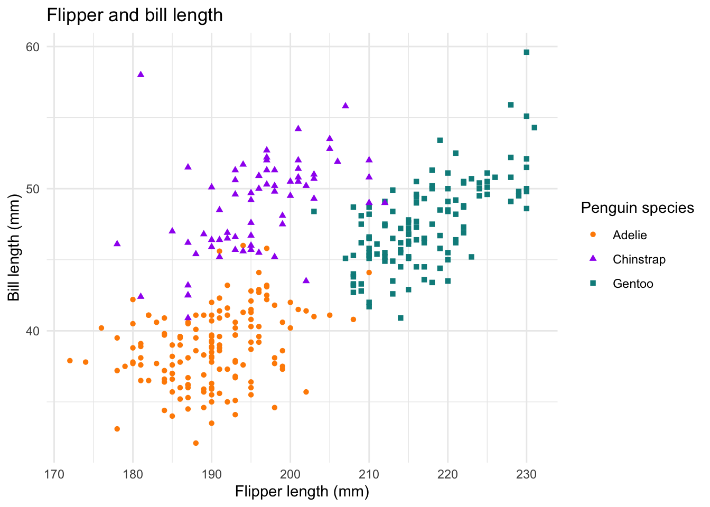
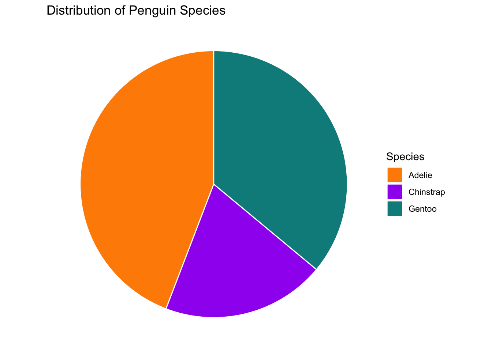

# Create a sample data frame
data <- data.frame(
id = 1:10,
score = runif(10, min=0, max=100)
)
# Write the data frame to a CSV file
write.csv(data, "sample_data.csv", row.names = FALSE)ST117 Lab 1
Collecting data, simple data manipulation and visualisation
1. Introduction
Welcome to ST117 Introduction to Statistical Modelling Lab 1!
In this lab session, we will focus on how to collect, save, and read data in R. We will also discuss some ways to manipulate and visualise our datasets. You will also have the chance to share and present the data you have collected with your deskmates!
2. Data Collection
2.1 Saving data into .csv Files
Here’s a basic example of how to save a dataset into a .csv file in R:
2.2 Reading CSV Files
To read a CSV file into R:
# Read the CSV file
data_read <- read.csv("sample_data.csv", header = FALSE)2.3 Finding data online
Datasets can also be found in various online repositories, such as:
Kaggle is a popular platform for data science competitions, but it also hosts a wide variety of datasets. These datasets cover a range of topics and complexities and can be a great starting point for projects in statistical modelling, data science, and machine learning
UCI Machine Learning Repository: The University of California, Irvine, maintains a repository of datasets specifically for machine learning. These datasets are well-documented and have been used in numerous academic papers, making them ideal for research.
…
Your turn!
Please share your A0-collect! datasets to your deskmate - you could use email, link sharing, USB, etc.
Introduce your datasets to each other - how have you collected the data? What questions are you trying to answer with your data?
After you have received your deskmate’s datasets, try to load them into your R workspace.
3 Data Manipulation
Meet the penguins

The penguins data from the palmerpenguins package contains size measurements for 344 penguins from three species observed on three islands in the Palmer Archipelago, Antarctica.
We will first install and load the packages:
install.packages("palmerpenguins")
library(palmerpenguins)Let’s take a look at the penguins data:
penguins# A tibble: 344 × 8
species island bill_length_mm bill_depth_mm flipper_length_mm body_mass_g
<fct> <fct> <dbl> <dbl> <int> <int>
1 Adelie Torgersen 39.1 18.7 181 3750
2 Adelie Torgersen 39.5 17.4 186 3800
3 Adelie Torgersen 40.3 18 195 3250
4 Adelie Torgersen NA NA NA NA
5 Adelie Torgersen 36.7 19.3 193 3450
6 Adelie Torgersen 39.3 20.6 190 3650
7 Adelie Torgersen 38.9 17.8 181 3625
8 Adelie Torgersen 39.2 19.6 195 4675
9 Adelie Torgersen 34.1 18.1 193 3475
10 Adelie Torgersen 42 20.2 190 4250
# ℹ 334 more rows
# ℹ 2 more variables: sex <fct>, year <int>What if we are interested in some specific aspects of the penguins?
Calculate the mean body mass of penguins (similarly, you can use
varfor variance andmedianfor median)mean(penguins$body_mass_g, na.rm = TRUE) # na.rm indicates whether we remove the NA values[1] 4201.754Get the 5 largest body masses
head(sort(penguins$body_mass_g, decreasing=TRUE), 5)[1] 6300 6050 6000 6000 5950
*Introducing: dplyr package
In data science, dplyr is a very popular package. It is a grammar of data manipulation, providing a consistent set of verbs that help you solve the most common data manipulation challenges. To install and load dplyr:
# Load the dplyr package for data manipulation
install.packages("dplyr")
library(dplyr)With dplyr, we can do more fun things with our dataset!
Count how many penguins are in each species
count(penguins, species)# A tibble: 3 × 2 species n <fct> <int> 1 Adelie 152 2 Chinstrap 68 3 Gentoo 124Filter the datasets to get the data for female Gentoos only:
filter(penguins, sex == "female", species == "Gentoo")# A tibble: 58 × 8 species island bill_length_mm bill_depth_mm flipper_length_mm body_mass_g <fct> <fct> <dbl> <dbl> <int> <int> 1 Gentoo Biscoe 46.1 13.2 211 4500 2 Gentoo Biscoe 48.7 14.1 210 4450 3 Gentoo Biscoe 46.5 13.5 210 4550 4 Gentoo Biscoe 45.4 14.6 211 4800 5 Gentoo Biscoe 43.3 13.4 209 4400 6 Gentoo Biscoe 40.9 13.7 214 4650 7 Gentoo Biscoe 45.5 13.7 214 4650 8 Gentoo Biscoe 45.8 14.6 210 4200 9 Gentoo Biscoe 42 13.5 210 4150 10 Gentoo Biscoe 46.2 14.5 209 4800 # ℹ 48 more rows # ℹ 2 more variables: sex <fct>, year <int>Get the mean body mass of penguins by species
summarise(penguins, mean_body_mass = mean(body_mass_g, na.rm = TRUE), .by = species)# A tibble: 3 × 2 species mean_body_mass <fct> <dbl> 1 Adelie 3701. 2 Gentoo 5076. 3 Chinstrap 3733.
Your turn!
Use these functions, or other ones that you like, investigate your and your deskmate’s datasets!
- If you run into any problems, try solving them by checking the documentation, using the help function, and discussing with each other!
Share your findings with your deskmate.
4 Data Visualisation
ggplot2 is one of (if not the) most popular data visualisation packages in R - it is a must-have!
Install and load the ggplot2 package:
install.packages("ggplot2")
library(ggplot2)There are many different kinds of plots that you can generate with ggplot2:
The scatter plot below shows the relationship between the flipper and bill lengths of these penguins.
ggplot(penguins,
aes(x = flipper_length_mm, y = bill_length_mm)) +
geom_point(aes(color = species, shape = species)) +
scale_color_manual(values = c("darkorange","purple","cyan4")) +
labs(
title = "Flipper and bill length",
x = "Flipper length (mm)", y = "Bill length (mm)",
color = "Penguin species", shape = "Penguin species"
) +
theme_minimal()
This is a histogram of the penguin’s body masses
ggplot(penguins, aes(x=body_mass_g)) +
geom_histogram(binwidth=100, fill="blue", color="black") +
labs(title="Histogram of Penguin Body Masses",
x="Body Mass (g)",
y="Count")Warning: Removed 2 rows containing non-finite values (`stat_bin()`).We can also generate a pie chart for the number of penguins in each species
# Count the number of penguins in each species
species_counts <- count(penguins, species)
ggplot(species_counts, aes(x="", y=n, fill=species)) +
geom_bar(stat="identity", width=1, color="white") + # build a stacked barchart with one bar
coord_polar("y") + # make the barchart circular
scale_fill_manual(values = c("darkorange","purple","cyan4")) +
theme_void() + # remove background, grid, numeric labels
labs(fill="Species",
title="Distribution of Penguin Species")
Your turn!
Generate plots based on your and your deskmate’s datasets
Compare your results - did you choose the same plotting function? What did you find?